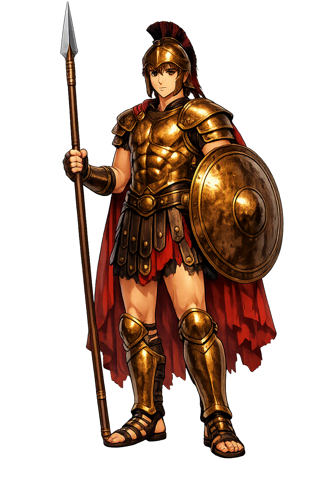

Stories of Pátroklos
Patroklos speaks almost nothing in the first half of the Iliad except to serve; when he finally speaks at length — weeping beside the ships — he sets the poem’s whole second movement in motion. His story is the epic’s deepest argument: that gentleness, not wrath, is what a hero finally costs the world.
Before Troy, Patroklos was an exile. As a boy in Opus he killed a companion, Klysonymos son of Amphidamas, in a quarrel over a game of knuckle-bones, and his father Menoitios sent him away to Phoinix, who in turn sent him on to Peleus at Phthia (Homer, Iliad 23.84–90). There he grew up beside Achilles, and when the fleet mustered, Menoitios charged him with the older friend’s duty: though Achilles is the stronger, Patroklos is the elder, and he must counsel him well (Homer, Iliad 11.780–790). The Iliad’s gentlest warrior thus begins in an accident of violence — a child sent from home for the kind of loss of temper every child knows — and the poem never lets us forget that the healer was once the boy with blood on his hands.
Wounded men keep finding Patroklos. When the Achaean healers fall one after another, Eurypylus limps to Achilles’ hut with an arrow in his thigh, and it is Patroklos who eases him down, cuts out the barbed point, and bathes the wound with warm water — the gentle hands Homer says he learned from Achilles, who learned them from Cheiron the centaur (Homer, Iliad 11.809–848). The scene is easy to pass over, yet it is the poem’s clearest portrait of him: in a camp organised around killing, Patroklos’s signature act is stitching a stranger back together. Homer has already told us how the story ends; the healer is being prepared, line by line, for the wound that no one in the camp will be able to close — and for the friend who will close his own.
The embassy has failed and the Achaeans are dying when Patroklos comes to Achilles in tears. Achilles — startled — mocks him gently: ‘Why are you crying, Patroklos? You are like a little girl running beside her mother, pulling at her dress, wanting to be picked up’ (Homer, Iliad 16.1–11). But the weeping is strategy as much as grief: Patroklos begs to wear Achilles’ armour and lead the Myrmidons out, and Achilles — whose wrath has held the whole army hostage — agrees, warning him only to win honour and come back (Homer, Iliad 16.36–100). This is the poem’s hinge. Pity, refused to every embassy, enters Achilles’ camp through the one door he cannot bar — his friend’s tears — and everything that follows, triumph and catastrophe alike, walks in through that door.
In Achilles’ armour Patroklos is irresistible. He storms the Trojan ranks until the wave of his assault reaches Sarpêdôn, son of Zeus and king of Lycia. Zeus, watching his beloved son ride to his death, asks Hera whether to spare him — and lets him fall, because fate and Sarpêdôn’s own honour demand it; a tear of blood falls from the father of gods, and Sleep and Death carry the Lycian home (Homer, Iliad 16.419–461, 16.666–683). Patroklos presses on too far. Three times Apollo strikes him senseless, the third time stripping the borrowed armour, and then Euphorbos wounds him from behind and Hector drives the spear through his body (Homer, Iliad 16.783–821). Dying, Patroklos prophesies that Hector’s triumph will be short — Achilles will kill him. The armour made him visible to the whole battlefield, and visibility, in this poem, is an invitation the gods cannot refuse.
Achilles’ grief at the news is the Iliad’s largest emotion. He laments that he forgot nothing of Patroklos, even in death, and lies in the dust tearing his hair (Homer, Iliad 18.316–355); the ghost itself comes to his tent, asking for burial so that it may pass through the gates of Hades (Homer, Iliad 23.65–107). At the funeral the bones are washed in wine and oil, wrapped in a double layer of fat and fine linen, and laid in a golden urn (Homer, Iliad 23.239–257); later tradition remembers that Achilles’ own ashes were mingled with them in the same vessel, with Antilochos beside them (Homer, Odyssey 24.71–84). The poem’s warriors measure themselves in tombs, but its final image of friendship is not a weapon — it is a jar: two men, one vessel, one mound by the Hellespont.
Warrior
Patroklos — “Father’s glory” — is the dearest companion of Achilles and the moral centre of the Iliad: the gentle healer who dons his friend’s armour, turns the Trojan tide, and dies at Hector’s hands, setting in motion the wrath, grief, and reconciliation that close Homer’s poem.
The name itself: patḗr, ‘father,’ + kléos, ‘glory’ — the reputation a son leaves in his father’s house.
Homer’s own word for Patroklos — Achilles’ honoured companion and equal, prized above every other ally in the camp.
The arms of Achilles that Patroklos wears into battle — glory made visible, and doom attached.
Achilles laid their mingled ashes in a single golden vessel — a friendship given permanent architecture.
From the original script to the living URL
Πάτροκλος
The name in its original Greek form. Pátroklos (Πάτροκλος) is attested in the source tradition — “Father's glory”. Its acute accents carry the full phonetic and orthographic weight of the source tradition.
patroclus
Reduced to plain patroclus, the name loses everything that made it specific: acute accents. What remains is an ASCII string that machines can parse but that no longer speaks with its original voice.
Pátroklos
The Unicode restoration recovers what ASCII flattened. Pátroklos restores acute accents, returning the name to its original written dignity. The domain encodes to Punycode, but the browser displays the truth.
Pátroklos.com → xn--ptroklos-8ya.com
The non-ASCII characters in Pátroklos are encoded while the ASCII remains visible. To the DNS, it is Punycode. To humanity, it is Pátroklos.
Owned, ideal, and ASCII forms of Pátroklos
Pátroklos
Restores Πάτροκλος. The full Unicode restoration. pátroklos.com is not in the PuniCodex collection — it is watched for release; if it drops, this temple upgrades to an owned flagship.
patroclus
Flattens Πάτροκλος. The plain ASCII fallback — what DNS and legacy systems see.
How Pátroklos was spoken
How Pátroklos is preserved in writing
A bespoke provenance study for Pátroklos is being prepared by the PUNICODEX scholarly team.
Contribute scholarly provenance →Patroklos is the Iliad’s quiet thesis: that the qualities war cannot use — mercy, service, tears — are the ones that finally move it. Every other hero in the poem fights to be seen; Patroklos fights to spare others, and he is destroyed the moment he consents to be seen, in armour that is not his. Homer’s economy is exact: the man who could not refuse a wounded stranger could not refuse the role of Achilles either.
Enter Extended Lore